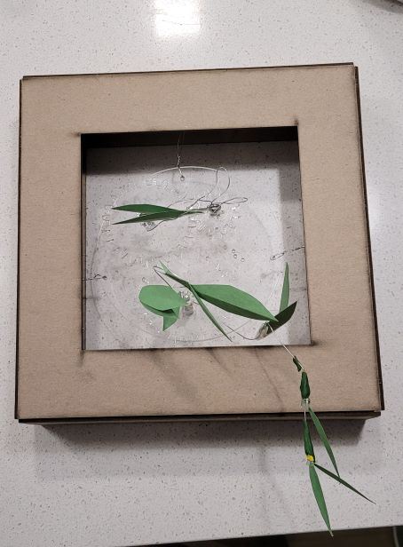

<!DOCTYPE html>
<html lang="en">
<html>

<head>
<style>
.p1 {
  font-family: "Times New Roman", Times, serif;
}

.p2 {
  font-family: Arial, Helvetica, sans-serif;
}

.p3 {
  font-family: "Lucida Console", "Courier New", monospace;
}
</style>
</head>

<body>

</body>
</html>


<title>PS70: Intro to Digital Fabrication </title>
<link href="https://cdn.jsdelivr.net/npm/bootstrap@5.1.1/dist/css/bootstrap.min.css" rel="stylesheet">
<link href="../style.css" rel="stylesheet">

<nav class="navbar navbar-expand-sm navbar-light bg-light">
  <div style="align-items: left; justify-content:left;" class="container-fluid">
    <h3 class="nav-title"> PS70: Intro to Digital Fabrication</h3>
    <div class="navbar-nav">
      <h4></h4>
      <h4><a class="nav-link" href="../index.html">Home</a></h4>
      <h4><a class="nav-link" href="../about.html">About Me</a></h4>
    </div>
  </div>
</nav>

<body>


<xmp style="display:none;">
<br> 
<p class="p3">

  <head>
<style>
body {
  background-color: #f0edfa;
}
</style>
</head>
<body>

 <b> Week 3: Attempts at Gears </b> <br>

First off - I struggled a bit this week to visualize what I wanted to make. I think it's because I've been working in 2D for so long... you don't have to think about how the entire thing looks, front and back. I got as far as potential gear arrangements, then kept blanking on what exactly I wanted those gears to do. <br>
<br>

The first idea I had was to recreate the 3 speed gears from <i> 507 Mechanical Movements </i> that Nathan <a href="http://507movements.com/mm_038.html"> linked.<a/>, which honestly could still be a potential future project - but as my first try literally ever with making gears/making a kinetic sculpture, I definitely should've tried out regular gears before spending so much time trying to figure out how to split a gear in Fusion. (Long story short: I winged it - traced the drawing from the site on Fusion, then tried to trace the gear in Fusion so I could edit the linework, and finally also tried a version in Rhino and it did not work because I did not consider the concept of angles) <br> <br>

<video width="320" height="240" controls>
  <source src="3speedfail.mp4" type="video/mp4">
</video>


<br>

At the very start at least, I knew that I'd put some type of artwork on top of the gears - just again was unsure about what kind of movement/what kind of art which was my downfall in the end (this is too melodramatic, I just could've managed my time better and asked for more help :))

<br> <br> 

When the 3-speed gear recreation did not work - I pivoted to just trying to figure out gears in general (very grateful that Fusion360 makes it so easy -- created gears using Utilities > Add-ins > Spur Gear)
Also decided at the last minute that I wanted it to hang within a frame so it looked more intentionally chaotic instead of just chaotic (artist tip: (almost) everything looks more intentional when framed) and honestly so I didn't have to spend more time figuring out a neat support that would look nice under a clear plexiglass circle. I very quickly modeled a frame in Rhino. 
<br> <br>

 <br> <br>

Spent longer than I want to admit figuring out how to get the motor into the gear -- ended up measuring the gear hole to be .254mm, lasercut it, and really just ...crammed it in there with a nut and washer to keep the gear flush with the base. This has been a learning curve to say the least. <br> <br>

 <br> <br>

Really left the aesthetics of the project to the last minute, but to sum it up: cut leaves out of construction paper, taped those to floral wire, hot glued the ends of the floral wire and stuck it while it was still hot into the tiny holes modeled into the gears. 

<br> <br> 

<video width="320" height="240" controls>
  <source src="prelim.mp4" type="video/mp4">
</video> <br> <br>

Struggled a lot with arranging the wire/leaves in a way that it would not jam up the gears - inadvertently made it into my original idea of a 3-speed gear since the leaves would clunkily pause the gear motion, then abruptly move. Definitely should've either made the gears larger or the leaves smaller. <br> <br>

<video width="320" height="240" controls>
  <source src="clunky.mp4" type="video/mp4">
</video>
<br> <br> 
Eventually ended up with the a somewhat smooth run - 
I think with my next project, I'll want to make something similar but with significant improvements (some aesthetically, but mostly mechanically and process-wise). We'll see! <br> <br>

<video width="320" height="240" controls>
  <source src="finalish.mp4" type="video/mp4">
</video>

<br> <br>
</p>

</xmp>
</body>

<script src="../strapdown.js"></script>
<script src="https://cdn.jsdelivr.net/npm/bootstrap@5.0.2/dist/js/bootstrap.bundle.min.js" ></script>

</html>